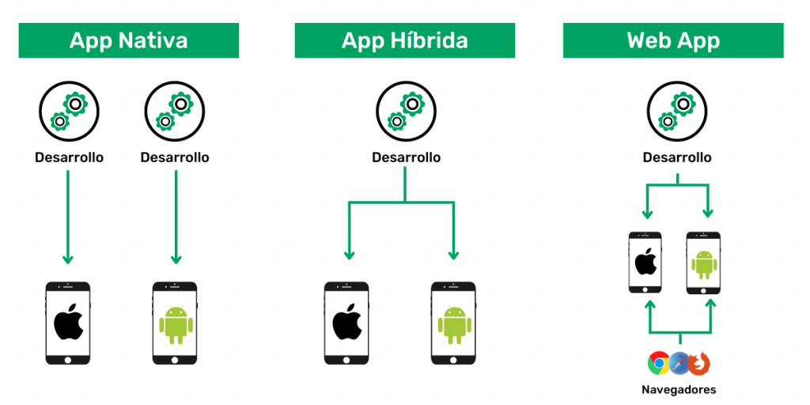
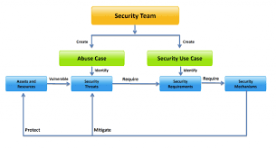

Introducción a la Seguridad en Aplicaciones
La seguridad en aplicaciones es un aspecto crítico en el desarrollo de software en la era digital. Desde la protección de datos sensibles hasta la prevención de intrusiones maliciosas, la seguridad en aplicaciones abarca una serie de conceptos y prácticas que son fundamentales para garantizar la integridad, confidencialidad y disponibilidad de los sistemas informáticos.
1.1 Conceptos Esenciales

En el contexto de seguridad en aplicaciones, es crucial entender conceptos como la autenticación, la autorización, el cifrado, la integridad de datos, la gestión de identidad y acceso, y la prevención de ataques. Estos conceptos forman la base para diseñar y desarrollar aplicaciones seguras.
1.2 Tipos de Aplicaciones
Las aplicaciones pueden clasificarse en una variedad de tipos, incluyendo aplicaciones web, móviles, de escritorio y embebidas. Cada tipo de aplicación presenta sus propios desafíos y consideraciones de seguridad, que deben abordarse de manera específica para garantizar su protección adecuada.
1.3 OWASP (Open Web Application Security Project)
OWASP es una comunidad dedicada a mejorar la seguridad del software. Proporciona recursos, herramientas y guías para ayudar a los desarrolladores a identificar y mitigar vulnerabilidades en aplicaciones web. La lista OWASP Top 10 es una referencia ampliamente utilizada que enumera las principales vulnerabilidades de seguridad en aplicaciones web.
1.4 SER (Security Requirement Engineering) La ingeniería de requisitos de seguridad (SER) se refiere al proceso de identificar, analizar y especificar los requisitos de seguridad de un sistema o aplicación. Esto implica comprender las amenazas potenciales, evaluar los riesgos y definir medidas de seguridad adecuadas para proteger la aplicación contra ataques.

1.5 SQUARE (Security Quality Requirements Engineering) SQUARE es un enfoque sistemático para incorporar requisitos de seguridad en el ciclo de vida del desarrollo de software. Ayuda a los equipos de desarrollo a definir y gestionar los requisitos de seguridad de manera efectiva, desde la fase de planificación hasta la implementación y mantenimiento del software.

1.6 OCTAVE (Operationally Critical Threat, Asset and Vulnerability Evaluation) OCTAVE es un marco de evaluación de riesgos diseñado para ayudar a las organizaciones a identificar y gestionar los riesgos de seguridad de manera integral. Se centra en la identificación de activos críticos, amenazas potenciales y vulnerabilidades, y en el desarrollo de estrategias de mitigación de riesgos.
En resumen, la seguridad en aplicaciones es un proceso continuo que requiere una comprensión profunda de los conceptos de seguridad, la aplicación de prácticas de desarrollo seguro y el uso de marcos y herramientas adecuadas para identificar, evaluar y mitigar los riesgos de seguridad.